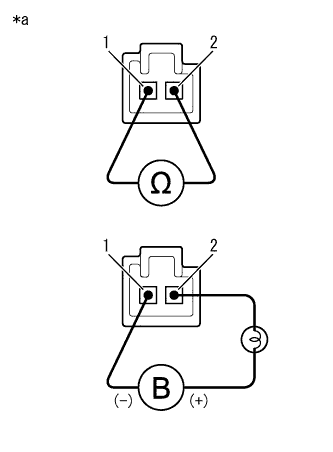

DTC P2757/68 SLUソレノイド系統(機能異常) |
| DTC No. SAE/TCCS | DTC検出条件
| 点検部位 |
|---|---|---|
| P2757/68 |
|
|
| 手順1 | ダイアグコード読み取り |
SST(TaSCAN)をDLC3に接続する。
IG ONにする。
SST(TaSCAN)の画面表示に従ってダイアグコードを確認する。(要領は参照)
| 結果 | 飛び先 |
|---|---|
| P2757/68のみ出力される | A |
| P2757/68以外のダイアグコードも出力する | B |
|
| ||||
| A | |
| 手順2 | ロックアップ コントロールソレノイド(SLU)単体点検 |
|  |
ロックアップコントロールソレノイド(SLU)を取りはずす。
SST(トヨタエレクトリカルテスター)を使用して、端子間の抵抗を測定する。
| 点検端子 | 点検条件 | 基準値 |
|---|---|---|
| 1 - 2 | 20°C | 5.0 to 5.6Ω |
| *a | コネクター非接続状態 (ロックアップコントロールソレノイド(SLU)) |
12V-21Wのバルブを介して、ロックアップコントロールソレノイド(SLU)のコネクターにバッテリプラスを接続し、ソレノイドボデーにバッテリマイナスを接続したとき、ソレノイド内のバルブが作動することを点検する。
|
| ||||
| OK | |
| 手順3 | トランスミッション バルブ ボデーASSY点検 |
トランスミッションバルブボデーASSYを点検する。
|
| ||||
| OK | |
| 手順4 | エンジンコントロール コンピュータ交換 |
エンジンコントロールコンピュータを交換する。
AT学習値初期化を行う。(要領は参照)
| 次へ | |
| 手順5 | ダイアグコード消去 |
SST(TaSCAN)をDLC3に接続する。
IG ONにする。
SST(TaSCAN)の画面表示に従ってダイアグコードを消去する。(要領は参照)
| 次へ | |
| 手順6 | ダイアグコード読み取り |
SST(TaSCAN)をDLC3に接続する。
問診、フリーズフレームデータにもとに走行テストを行う。
SST(TaSCAN)の画面表示に従ってダイアグコードを再確認する。(要領は参照)
| 結果 | 飛び先 |
|---|---|
| P2757/68を再出力する | A |
| 出力なし | B |
|
| ||||
| A | |
| 手順7 | トルク コンバータASSY点検 |
参照)
|
| ||||
| OK | ||
| ||